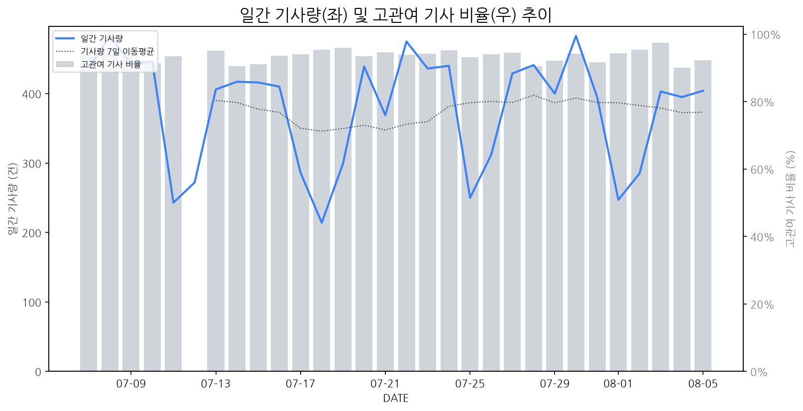

1
시장 활동 지표
기사량 추세 & 이상 징후 탐지
시장의 '전체 기사량'이 평소보다 비정상적으로 급증했는지(Spike)를 차트로 확인하고, LLM이 분석한 급등의 핵심 원인을 파악할 수 있음

고관여 기사란? 산업 연관 키워드로 수집된 기사들 중 디스플레이 키워드에 가중치를 반영하여 도출된 관련성 높은 기사
수집된 기사 수 (2026-08-05)
404
+1% WoW
기사량 변동 수준 (7일 이동평균 대비)
±6.7% 이하
2
오늘의 키워드
급격한 관심 ↑, 주목해야 할 키워드
1
hp
+2.4σ
HP 등 글로벌 PC 업체가 중국 창신메모리 D램을 채택하며 공급망 다변화 움직임이 부각되었습니다.
Related Metrics
금일 언급량: 8, 전일 대비: +3
Interpretation
패널 공급망 경쟁 심화
Next Step
'hp' 관련 상세 기사 및 경쟁사 반응 모니터링
2
구글
+1.8σ
구글 폴더블폰 신제품 출시 루머와 관련 기사, 어시스턴트 서비스 변경 영향이 복합적으로 작용한 것으로 보입니다.
Related Metrics
금일 언급량: 8, 전일 대비: +5
Interpretation
폴더블폰 시장 경쟁 심화
Next Step
핵심 토픽 'Set_Manufacturer' 관련 신호입니다. 3번 섹션(키워드 감성분석)에서 해당 토픽의 감성 변동을 교차 확인하세요.
3
실시간 Risk 키워드
경계해야 할 시그널 탐지
특정 토픽의 부정 감성 점수가 급등할 때 이를 즉시 탐지하고, "근거 기사" 링크를 통해 리스크의 실체를 빠르게 파악할 수 있음
키워드 분석 결과, 오늘은 걱정할 만한 하락 신호가 없습니다. (부정 언급량 변화: +1.5σ 이내)
4
주요 이벤트 모니터링
실시간 산업 동향 파악을 위한 주요 활동
최근 발생한 주요 기업들의 신제품 출시, 투자 등 주요 이벤트를 제공하여 매일 경쟁사 동향을 확인할 수 있음
화웨이가 스타일러스 펜을 지원하는 새로운 메이트북 폴드 2세대를 출시했습니다. 이는 폴더블 노트북 시장에서 스타일러스 기능의 중요성을 부각하는 이벤트입니다.
Impact
스타일러스 지원은 폴더블 노트북의 생산성 및 사용자 경험 향상을 통해 해당 시장의 성장을 촉진하고, 관련 디스플레이 기술 개발에 대한 경쟁을 심화시킬 수 있습니다.
Next Step
디스플레이 제조 기업은 스타일러스 호환성을 높이고 필기감을 개선하는 차세대 폴더블 디스플레이 기술 개발에 집중해야 합니다.
삼성디스플레이는 노트북 및 태블릿 시장에서 OLED 패널 채택 비중이 확대됨에 따라 반사이익을 얻을 것으로 예상됩니다. 이는 OLED 기술 경쟁력을 가진 디스플레이 제조 기업들에게 긍정적인 신호입니다.
Impact
노트북 및 태블릿 시장에서 OLED 채택이 증가함에 따라 LCD 패널의 시장 점유율 감소 및 OLED 패널의 수요 증대가 가속화될 것으로 예상됩니다.
Next Step
OLED 기술력 강화 및 생산 능력 확대를 통해 노트북/태블릿 시장에서의 점유율을 확보하고, LCD 대비 OLED의 가격 경쟁력을 높이는 방안을 모색해야 합니다.
삼성전자와 LG전자가 유럽 '게이밍위크'에서 고성능 TV와 모니터 신제품을 선보이며 치열한 경쟁을 펼쳤다. 이번 행사는 게이머를 타겟으로 한 디스플레이 기술력 과시의 장이 되었다.
Impact
이번 경쟁은 유럽 게이밍 디스플레이 시장의 기술 혁신을 가속화하고, 관련 제품의 성능 및 가격 경쟁을 심화시킬 것으로 예상된다.
Next Step
타사 신제품의 구체적인 성능 및 마케팅 전략을 파악하고, 자사 제품의 차별화된 강점을 부각하는 전략을 수립해야 한다.
광전자 기업이 광반도체 및 센서 기술에서 독보적인 입지를 구축하며 차세대 디스플레이 시장의 주도권 확보에 나섰습니다. 이는 기존 디스플레이 기술의 한계를 극복하고 새로운 가능성을 열 것으로 기대됩니다.
Impact
이 이벤트는 디스플레이 시장에 새로운 기술 트렌드를 제시하고, 기존 디스플레이 패널 제조사들의 기술 개발 및 사업 전략 재편을 촉진할 수 있습니다.
Next Step
디스플레이 제조 기업은 광전자 기술의 적용 가능성을 면밀히 검토하고, 관련 기술 확보 및 협력을 위한 전략을 수립해야 합니다.
구글 픽셀워치5의 위성 SOS 기능은 구매 후 2년간 무료로 제공되며, 이후 유료 서비스로 전환될 예정이다.
Impact
이러한 구독 기반의 프리미엄 기능 제공은 스마트워치 디스플레이를 단순 정보 표시를 넘어선 서비스 제공 플랫폼으로 인식하게 하여, 사용자 경험 향상 및 추가 수익 모델 발굴의 중요성을 부각시킬 수 있다.
Next Step
스마트워치 디스플레이 제조 기업은 위성 통신 등 차별화된 부가 기능 연동을 위한 디스플레이 기술 개발 및 파트너십 확보를 검토해야 한다.